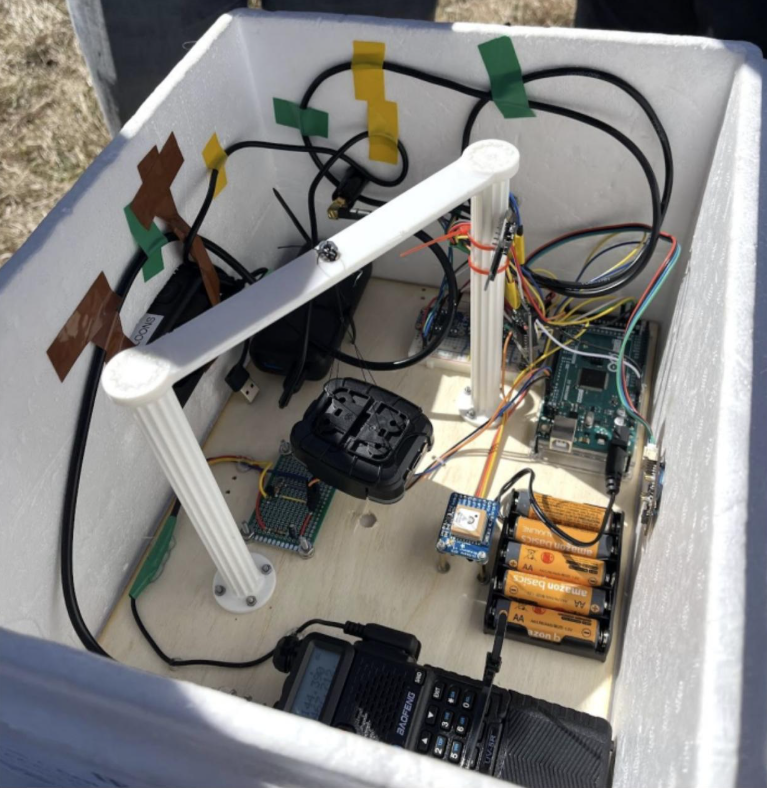
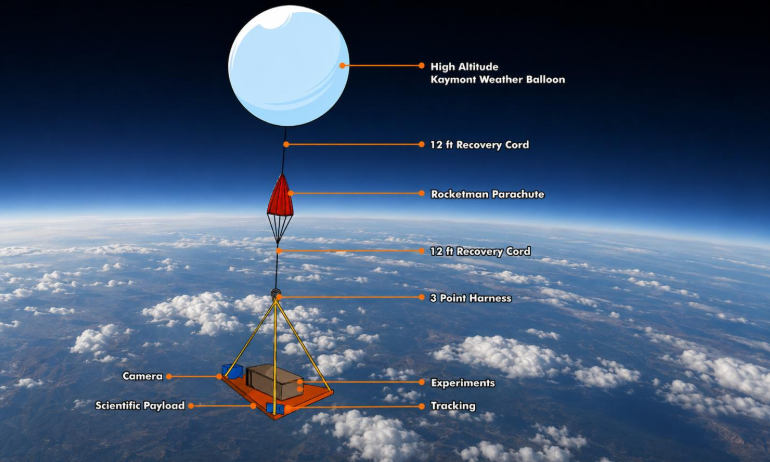

Description du projet
Notre projet consiste à concevoir, fabriquer et envoyer un ballon-sonde rempli d’hélium dans la haute atmosphère afin de réaliser différentes mesures scientifiques et de collecter un maximum de données sur notre environnement. Le ballon sera équipé d’une nacelle contenant plusieurs capteurs et instruments de mesure permettant d’enregistrer différentes informations tout au long de son ascension. L’objectif est d’étudier les conditions atmosphériques à différentes altitudes, jusqu’à atteindre la stratosphère, située à environ 30 à 35 km d’altitude. Pour gérer les différents capteurs et récupérer les informations, nous avons développé un programme avec Arduino. Ce programme permet de communiquer avec les différents composants électroniques, de récupérer les mesures en temps réel et de les enregistrer afin de pouvoir les exploiter par la suite. Nous avons donc programmé le système pour qu'il puisse fonctionner de manière autonome pendant toute la durée du vol. La nacelle embarquera plusieurs capteurs afin de mesurer différents paramètres comme l’altitude, la température, la pression atmosphérique, l’humidité, la vitesse d’ascension, la position GPS, le rayonnement ultraviolet ou encore la luminosité. Toutes ces informations seront enregistrées pendant le vol afin de pouvoir les récupérer et les analyser après l'expérience. Le fonctionnement du projet se déroulera en plusieurs étapes. Tout d’abord, nous construirons la nacelle et installerons les différents capteurs, une carte Arduino ainsi qu’un système permettant de stocker les données. Ensuite, nous gonflerons le ballon à l’hélium avant de procéder à son lancement. Pendant son ascension, les capteurs effectueront des mesures en continu et le programme Arduino enregistrera les résultats. À très haute altitude, le ballon finira par éclater à cause de la diminution de la pression atmosphérique. La nacelle redescendra alors vers le sol grâce à un parachute, ce qui permettra de récupérer le matériel et les données enregistrées. Ce projet a plusieurs objectifs. Il permettra de découvrir le fonctionnement de l’atmosphère, de comprendre les variations de température et de pression en fonction de l’altitude, mais également d'apprendre à utiliser différents capteurs, des systèmes électroniques et le GPS. Il permettra aussi de développer des compétences en programmation Arduino, en électronique, en conception et en analyse de données. L’objectif final est donc de concevoir un ballon-sonde autonome capable de monter le plus haut possible, de collecter un maximum d’informations et de nous transmettre des données exploitables après sa récupération. Cette expérience nous permettra de réaliser une véritable mission scientifique et de mieux comprendre notre atmosphère grâce à des mesures effectuées directement en altitude.